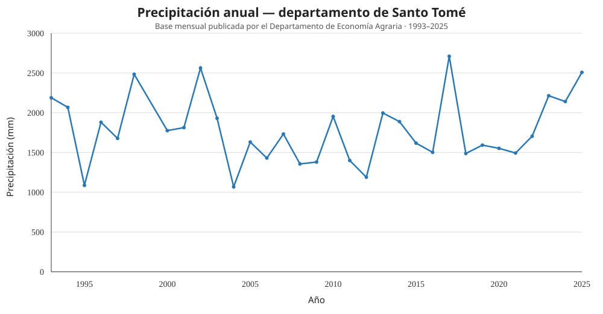
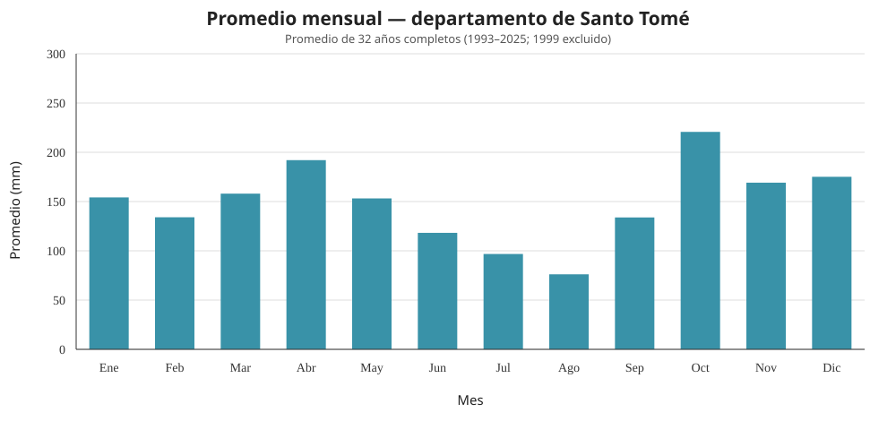

Hallazgos reunidos hasta ahora
Resultados descriptivos de los conjuntos analizados y del relevamiento de fuentes. Cada cifra conserva su escala geográfica, período y procedencia.
Precipitaciones en Santo Tomé, Corrientes
Base mensual del Departamento de Economía Agraria del Ministerio de Producción de Corrientes. Se utilizaron años con doce meses disponibles.

Totales anuales. Se excluyeron 1999 y 2026 por incompletos.

Promedios mensuales calculados con los 32 años completos.
El catálogo nacional INTA-SIGA
Consolidado público de terceros que declara utilizar datos SIGA-INTA, incorporado como referencia para estudiar disponibilidad y cobertura.
Qué aporta este conjunto
El catálogo incluye estaciones de Corrientes y Misiones. Las estaciones más cercanas del relevamiento se ubican aproximadamente a 70–80 km de Gobernador Virasoro, entre ellas Cerro Azul y Villa Miguel Lanús (Misiones) e Ituzaingó (Corrientes). La cercanía no garantiza continuidad ni comparabilidad y no reemplaza un registro de Virasoro.
La validación documentada coteja integridad y estructura del archivo consolidado. No equivale a una auditoría instrumental de cada observación ni confirma por sí sola unidades, frecuencia o completitud por estación.
Fuentes para ampliar la evidencia
El inventario distingue recursos consultados, catálogos identificados y series que requieren revisión específica antes de compararse.
Base mensual departamental utilizada para el análisis de Santo Tomé.
Portal de datos ↗Acceso a estaciones hidrometeorológicas en tiempo real que integra varias redes.
Acceso a estaciones ↗Datos históricos consolidados y registros de tiempo cuasi real; disponibilidad por estación y variable.
Portal SNIH ↗API documentada para redes, estaciones, variables y series de la Cuenca del Plata.
API ↗Catálogo de estaciones y productos meteorológicos; la precipitación debe verificarse en cada producto.
Descarga de datos ↗Catálogo y consolidado de observaciones con cobertura variable.
Portal SIGA ↗